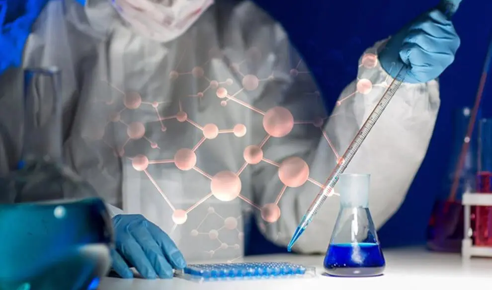
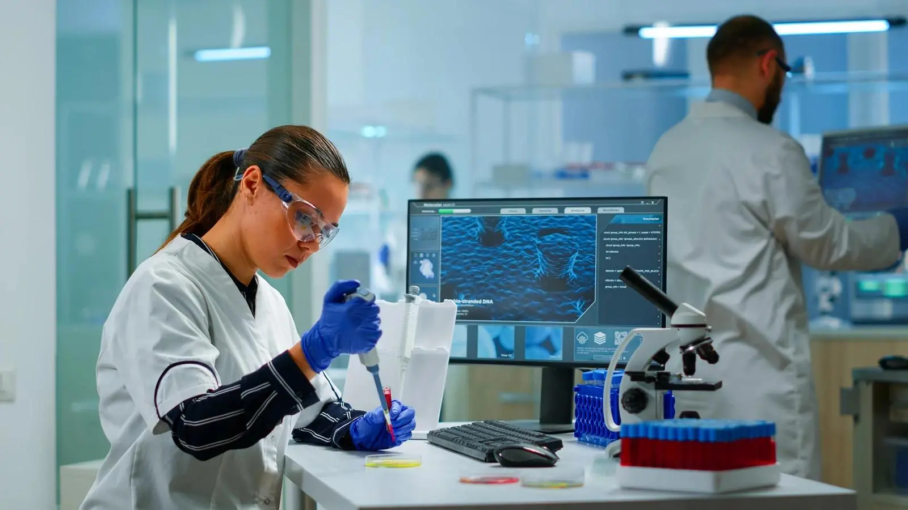

01
Genomics
DNA sequencing, genome mapping and precision genetic analysis.
Loading premium biotechnology research experience...

Stackly BioTech combines genomics, diagnostics, bioinformatics, automation and molecular research into one premium, trusted laboratory experience.
DNA Mapping
 Clinical Testing
Clinical Testing
DNA sequencing, genome mapping and precision genetic analysis.
Clinical testing, biomarker detection and lab reporting.

Molecular screening, compound analysis and validation.
AI data science, computational biology and research dashboards.

Protein pathways, cellular research and molecular discovery.

Secure clinical reports, dashboards and monitoring insights.
DNA sequencing, genome mapping and precision genetic analysis.
Clinical testing, biomarker detection and lab reporting.
Molecular screening, compound analysis and validation.
AI data science, computational biology and research dashboards.
Protein pathways, cellular research and molecular discovery.
Secure clinical reports, dashboards and monitoring insights.
 Digital Reports
Digital Reports
Stackly BioTech is designed for premium biotechnology, clinical diagnostics, molecular research, and AI-driven lab automation.
Clinical-grade visual trust and premium scientific workflow.
Bioinformatics, genomics and diagnostic intelligence.
Explore our premium research areas across genomics, molecular discovery, AI bioinformatics, diagnostics, and automated laboratory intelligence.
Advanced DNA sequencing intelligence enables rapid genomic analysis, helping researchers detect genetic variations and accelerate precision medicine.
Protein pathways and cellular discovery reveal how cells communicate, repair, and grow, helping identify biomarkers and therapeutic targets.
Bioinformatics pipelines convert complex biological data into actionable insights using AI-assisted models and secure analytics.
Automate sample collection, workflow tracking, AI diagnostics, reporting and lab quality checks with a clean premium biotechnology interface.

Chief Scientist

Clinical Director

Bioinformatics Head
Book a lab visit, diagnostics consultation, or research partnership with Stackly BioTech.
This static demo page is not available. Social and portal clicks are routed here.